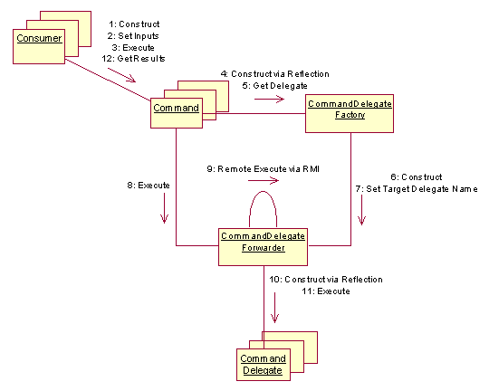
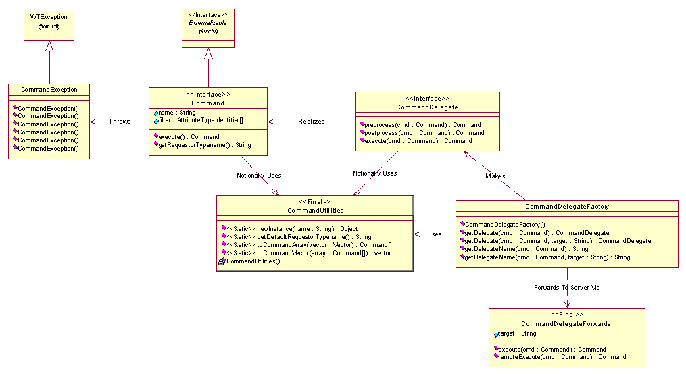

There are many types of consumers that command a Windchill system (i.e., method server) to perform tasks, or request information from it.
See: Description
| Class | Description |
|---|---|
| NullFeedbackSpecException |
Supported API: true Extendable: true |
There are many types of consumers that command a Windchill system (i.e., method server) to perform tasks, or request information from it. These consumers can be HTML or Java clients, vertical applications, command-line utilities, external systems, etc.
From an architectural perspective all of these consumers require a common means to perform these commands. Each command represents a business task or sequence thereof that can be performed against a single Windchill system. To perform these same commands against other types of systems adapters would be required for those systems where the commands could be effectively employed. This too applies for a web of cooperative systems.
To form a unified �enterprise layer� of commands around a Windchill system there must be the notion and implementation of these commands as a composite design pattern. This documentation establishes the design pattern for the �enterprise layer� based on commands.
·Windchill clients were Java applets.
·Windchill clients communicated with Windchill server-side services using RMI, receiving serialized copies of the server-side objects.
·Windchill clients operated on the same classes and objects used by Windchill services.
The current state is more complicated for Windchill clients. A �Windchill client� may still be a Java applet, but it may also be a Java application, HTML client authoring using template processing or Java Server Pages, a Java or HTML client accessing Windchill services through Info*Engine webjects, or other clients using Servlets, XML, etc.
Clients need to be able to invoke common business tasks such as:
·CRUD for business objects as a whole.
·Querying for information.
·Updating attributes on business objects (Parts, Documents, Change Requests, etc).
· Changing the state of a business object through an operation (Checkout/in, Revise, Promote, etc.).
·Navigating, creating, updating, or removing associations between objects.
Windchill services exist to perform these business tasks. However, these existing services are designed to service the �traditional� Windchill Java client. These services are not suitable for direct access by New Client Architecture (NCA) clients because:
·They are designed to operate directly on Windchill persistable objects where NCA clients use type instances and attribute containers.
·They do not allow for operations to be performed indirectly through Info*Engine on composite business objects. In other words, not all of the business object�s attributes are from or managed by one system. There could be a web of cooperative Windchill and external systems where each owns part of the object.
·They do not understand the new virtual �typed� objects created through Light-Weight Customization (LWC) mechanisms.
Attempts to produce interfaces suitable for different types of clients have resulted in FormActionDelegates (for HTML Template processing), WebjectDelegates (for Info*Engine webjects), and various �TaskLogic� classes for Java applet clients. In many cases, there has been a duplication of business logic code in these classes.
Patterns must be established which allow core functionality to be easily utilized in a variety of clients, without promoting duplication of code representing key business logic. The code to service a request for a JSP client should not be duplicated in the code to service the same request for a Webject or Java applet client. The �golden logic� of Windchill must be re-used in a more reliable manner than cutting and pasting code.
|

|
|

|